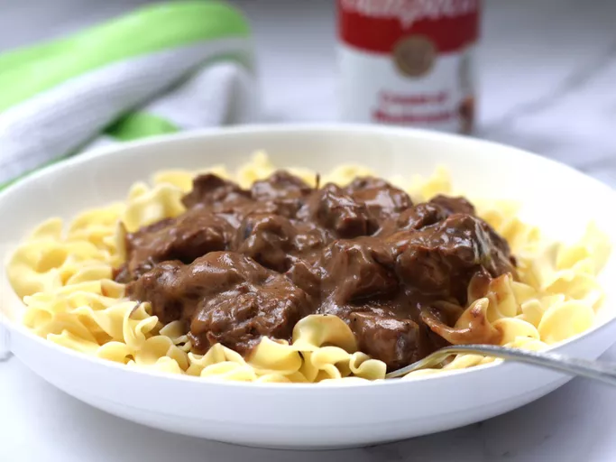

Creamy Beef Tips with Egg Noodles

Description
Ingredients
- 2 pounds sirloin tips, cubed
- ½ yellow onion, chopped
- 2 (10.5 ounce) cans condensed cream of mushroom soup (such as Campbell’s)
- 1 cup milk
- ½ cup red wine
- 1 (1.25 ounce) package beef with onion soup mix
- 2 (16 ounce) packages egg noodles
Steps
- Heat a large skillet over medium-high heat. Saute beef sirloin tips with onion in the hot skillet until beef is browned, about 5 minutes.
- Stir cream of mushroom soup, milk, red wine, and beef with onion soup mix together in a bowl, pour into the skillet, and stir to coat beef in the soup mixture; bring to a simmer, reduce heat to low, place a cover on the skillet, and cook until the beef tips are tender, about 2 hours.
- Reduce heat to lowest setting and continue cooking until the beef pulls apart easily with a fork, at least 4 hours more.
- Bring a large pot of lightly salted water to a boil. Cook egg noodles in the boiling water, stirring occasionally until cooked through but firm to the bite, about 5 minutes. Drain.
- Ladle beef tips mixture over egg noodles.